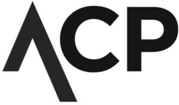

Trade Mark Journal No.2025/042 17 October 2025
WO0000001866516 (9,16,35,36,37,38,41,43,44,45)
Office of origin: Switzerland
Date of International Registration:7 November 2024
Date of designation in the UK:
7 November 2024

International priority date claimed: 29 May 2024
(Switzerland)
(817739)
- Class 9
- Recorded or downloadable media; downloadable electronic publications; downloadable electronic publications in the form of magazines; downloadable video recordings; audio books; downloadable podcasts.
- Class 16
- Printing products (printed matter); photographs; books; bibles; magazines (periodicals); instructional or teaching material; printed reports.
- Class 35
- Public relations; commercial business administration, organization and management; office functions; commercial or industrial company management assistance; assistance and consultant services regarding commercial business management and organization; Development of business organization strategies relating to corporate social responsibility; organization and conducting of second-hand markets; consultant services and providing information relating to the aforesaid services.
- Class 36
- Financial services, monetary affairs; arranging of financing for humanitarian projects; financial sponsorship of social, charitable and religious organizations; charitable fund raising by means of entertainment events; organization of charitable collections; charitable fundraising services; charitable fund raising services for underprivileged children; consultant services and providing information relating to the aforesaid services.
- Class 37
- Construction services; installation and repair services; renovation and construction of housing for families in precarious situations; construction and maintenance of vacation homes, holiday camps, temporary accommodation, hotels and residential hotels; consultant services and provision of information relating to the aforesaid services.
- Class 38
- Video and audio communication and transmission services; dissemination of audiovisual and multimedia content via the Internet; providing access to electronic communication networks; providing access to chat lines, chat rooms and forums on the Internet, including the mobile Internet; consultant services and provision of information relating to the aforesaid services.
- Class 41
- Education; training; entertainment; sporting and cultural activities; preparation and hosting of conferences, congresses, concerts, symposiums, seminars, lectures, lessons and training courses; organization of competitions or other sporting and cultural events for charitable purposes; religious education; provision of educational entertainment services for children in after-school centers; training or education services in the field of life coaching; coaching; interpretation and translation services; translation services; sports camp services; holiday camp services (entertainment); provision of recreational areas in the form of children's play areas; consultant services and providing information relating to the aforesaid services.
- Class 43
- Services for providing food and beverages; temporary accommodation; Provision of food to people in precarious situations (charitable services); provision of emergency shelter services in the form of temporary accommodation services; provision of day care centers for children, the disabled or the elderly; retirement home services; holiday camp services (lodging); consultant services and providing information relating to the aforesaid services.
- Class 44
- Medical services; hygienic care for human beings; agriculture, aquaculture, horticulture and forestry services; medical services for the needy in the framework of charitable activities (charitable services); emergency medical assistance; services provided by pediatric out-patient medical clinics; psychological coaching, counseling and therapy; psychosocial care; provision of mental-health rehabilitation facilities; rehabilitation of people suffering from addictions; consultant services and providing information relating to the aforesaid services.
- Class 45
- Legal services; security services for physical protection of property and individuals; legal services in the field of child welfare; online social networking services; running errands for others; companionship services for the elderly and disabled; organization of religious meetings; provision of information online in the fields of spirituality, self-help and for improving self-confidence; provision of clothing to the needy (charitable services); provision of of first-aid goods to needy persons (charitable services); pastoral counseling and coaching services; consultant services and providing information relating to the aforesaid services.
Verein AVC / ACP
Representative: Markenregistrierung.ch GmbH, Neunbrunnenstrasse 50, CH-8050 Zürich, SWITZERLAND